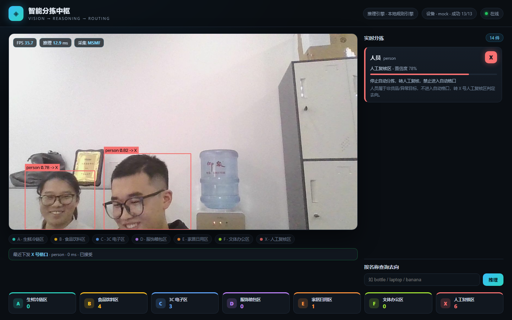

YOLO11 实时识别画面里的物体，推理引擎判断分拣格口与操作要求，通过 Modbus TCP / TCP-JSON 把指令下发给 PLC 或机械臂。一套跑在工控机上的开源方案。

识别、决策、执行解耦，任何一层都能单独替换。
MSMF 采集 720p @30fps，YOLO11s FP16 推理约 10ms/帧，实时框出目标并着色。
内置 80 类品类知识库，输出格口、区域、搬运要求与理由；配置 API Key 可切换大模型。
Modbus TCP / TCP-JSON / MQTT 三种后端，串行队列、超时重连、幂等指令 ID。
A–F 六个自动格口，X 为人工复核。
| 格口 | 区域 | 典型物品 |
|---|---|---|
| A | 生鲜冷链区 | 香蕉、苹果、披萨、蛋糕 |
| B | 食品饮料区 | 瓶子、杯子、碗 |
| C | 3C 电子区 | 手机、笔记本、键盘 |
| D | 服饰箱包区 | 背包、行李箱、领带 |
| E | 家居日用区 | 椅子、沙发、盆栽 |
| F | 文体办公区 | 书、滑板、剪刀 |
| X | 人工复核区 | 人、动物、车辆、未知品类 |
需要 Python 3.10+；有 NVIDIA 显卡会快很多，没有也能用 CPU 跑。
git clone https://github.com/PYT188/warehouse-sort.git
cd warehouse-sort
pip install -r requirements.txt
python app.py
# 浏览器打开 http://127.0.0.1:8765